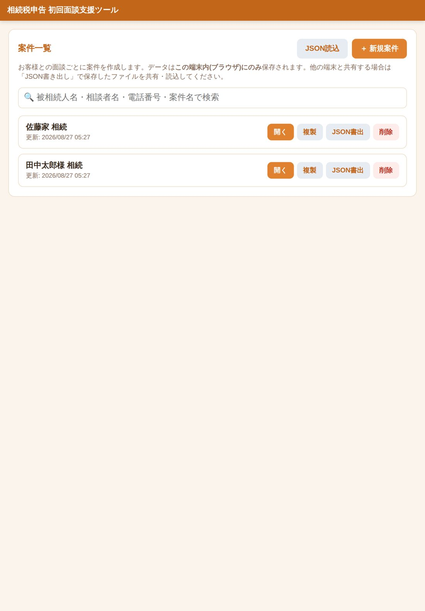
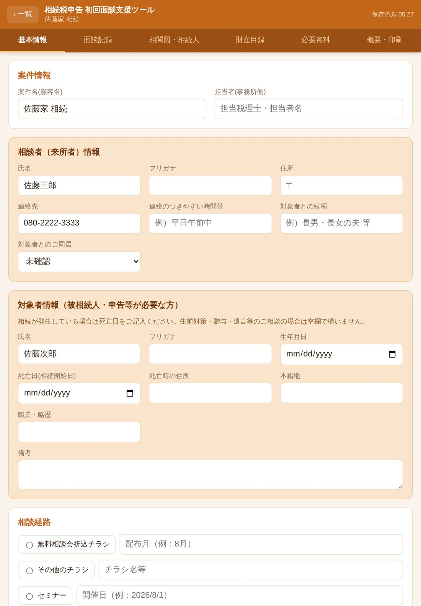
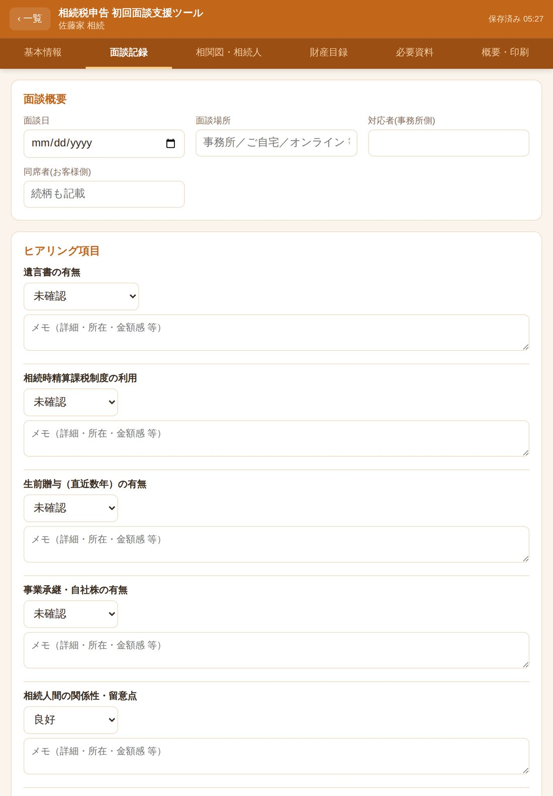
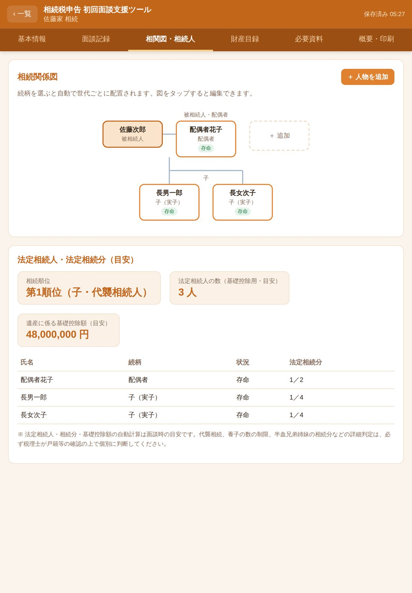
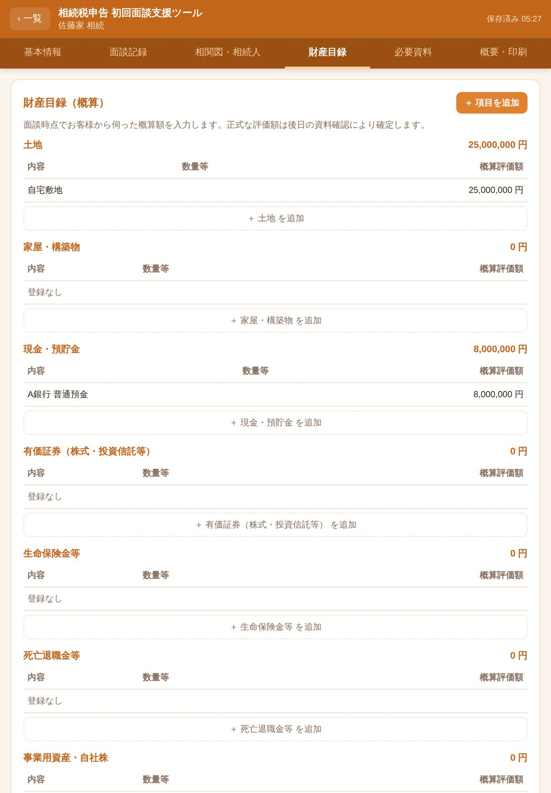
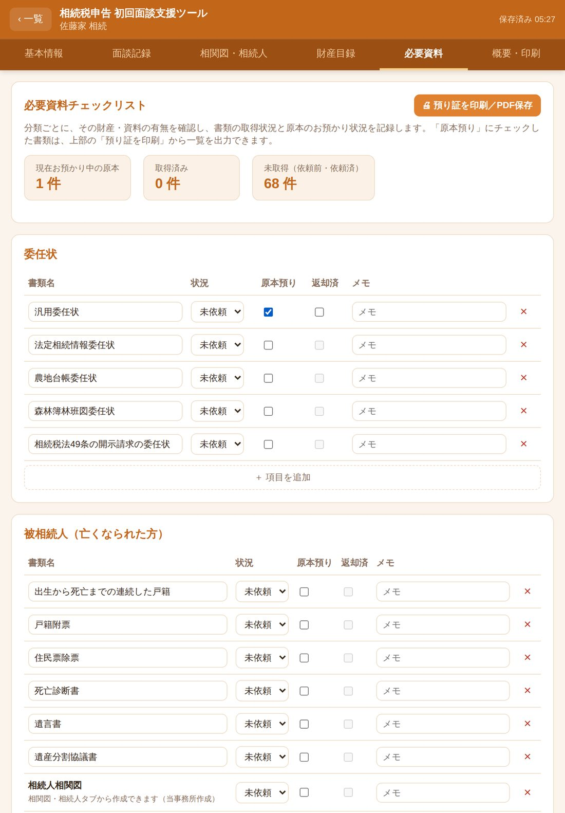
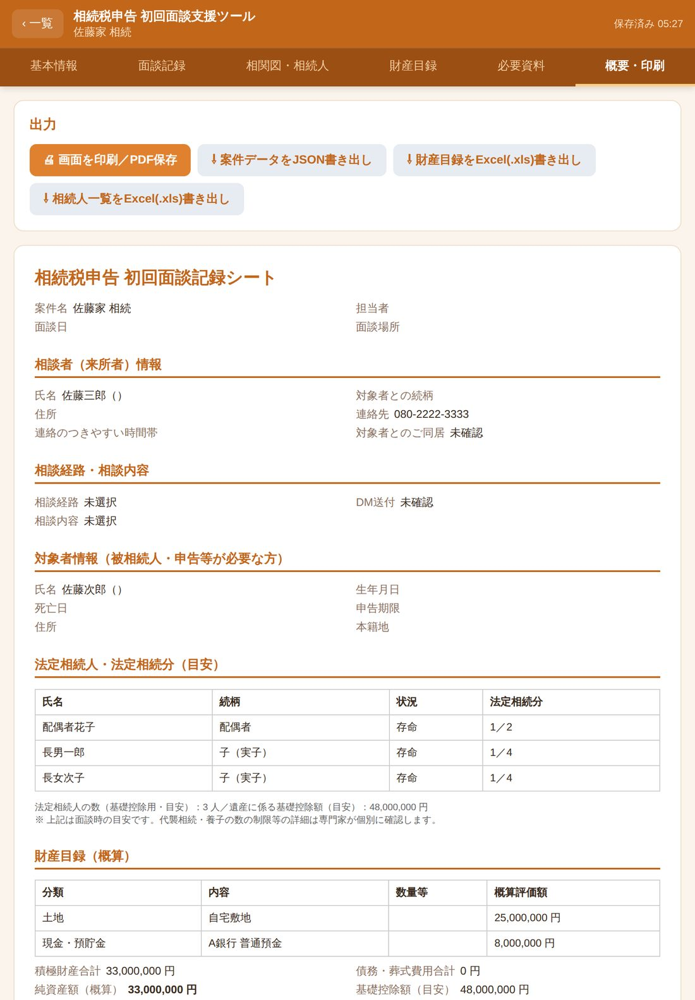

案件一覧
お客様との面談ごとに案件を作成します。データはこの端末内(ブラウザ)にのみ保存されます。他の端末と共有する場合は「JSON書き出し」で保存したファイルを共有・読込してください。
案件情報
相談者（来所者）情報
対象者情報（被相続人・申告等が必要な方）
相続が発生している場合は死亡日をご記入ください。生前対策・贈与・遺言等のご相談の場合は空欄で構いません。
相談経路
相談内容
該当するものをすべて選択してください（複数選択可）。
面談概要
ヒアリング項目
面談メモ・特記事項
相続関係図
続柄を選ぶと自動で世代ごとに配置されます。図をタップすると編集できます。
法定相続人・法定相続分（目安）
| 氏名 | 続柄 | 状況 | 法定相続分 | 同居 |
|---|
※ 法定相続人・相続分・基礎控除額の自動計算は面談時の目安です。代襲相続、養子の数の制限、半血兄弟姉妹の相続分などの詳細判定は、必ず税理士が戸籍等の確認の上で個別に判断してください。
財産目録（概算）
面談時点でお客様から伺った概算額を入力します。正式な評価額は後日の資料確認により確定します。
※ 生命保険金の非課税枠は「相関図・相続人」タブで把握した法定相続人の数をもとにした目安です。相続放棄をした方が受け取った保険金には適用されない等、詳細な判定は税理士が個別に確認してください。
必要資料チェックリスト
分類ごとに、その財産・資料の有無を確認し、書類の取得状況と原本のお預かり状況を記録します。「原本預り」にチェックした書類は「預り証を印刷」から、全項目の一覧は「チェックリストを印刷／PDF保存」「Excel書き出し」から出力できます。
出力（面談内容の記録）
こちらは面談内容の記録（基本情報・相続人・財産目録・ヒアリング内容）のみを出力します。必要資料チェックリストは「必要資料」タブから別途、印刷／PDF保存・Excel書き出しができます。
📘 使い方ガイド
お客様との初回面談で、iPadを使いながら記録を進めるためのツールです。実際の画面とあわせてご案内します。
00このツールについて
相続税申告・相続手続きのご相談を受ける最初の面談で、その場で入力しながら話を進められるように作られたツールです。相談者・対象者の基本情報、面談での聞き取り内容、相続関係図、財産の概算、必要資料の確認までを、ひとつの案件としてまとめて記録できます。
入力したデータは事務所のサーバーではなく、使用している端末のブラウザの中だけに保存されます。面談が終わったら「概要・印刷」タブから面談記録シートを印刷・PDF保存し、あわせてデータのバックアップ（JSON書き出し）を行ってください。
01はじめに：初期設定
端末ごとに一度だけ行う準備です。
- iPadのSafariで下記のURLを開きます。
https://nakagakiken15246-ops.github.io/nakagakiken_daikou/inheritance-tool/ - 画面の共有ボタン（□に↑のアイコン）をタップします。
- 「ホーム画面に追加」を選択します。アイコンがホーム画面に追加され、アプリのように起動できます。
注意
プライベートブラウズモードでは使用しないでください。タブを閉じるとその場で入力したデータごと消えてしまいます。
02案件を作る・探す
お客様との面談ごとに、ひとつの「案件」を作成します。案件一覧の ＋ 新規案件 から作成し、検索ボックスに被相続人名・相談者名・電話番号・案件名を入力すると絞り込めます（電話番号はハイフンの有無どちらでも検索可）。

- 開く：その案件の入力画面に進みます
- 複製：似た案件のひな形として複製します
- JSON書出：その案件だけをバックアップ・共有用に書き出します
- 削除：案件を完全に削除します（元に戻せません）
03基本情報を入力する
相談者様・対象者様の情報、相談の経緯・内容を記録します。死亡日を入力すると、相続税申告期限（死亡日の翌日から10か月）が自動表示されます。生前対策・贈与・遺言のご相談で対象者がまだご存命の場合は、死亡日は空欄のままで構いません。

04面談記録をつける
遺言書の有無・生前贈与・事業承継など、ヒアリング項目ごとに状況とメモを記録します。面談メモ・特記事項には自由に記載し、次回打合せの予定もあわせて記録してください。

05相関図・相続人を作成する
＋ 人物を追加 から続柄を選ぶだけで、世代ごとに自動配置されます。登録した人物から、法定相続人・法定相続分・遺産に係る基礎控除額の目安が自動計算されます。

代襲相続について
「孫（代襲相続人）」「甥・姪（代襲相続人）」は、その代の子・兄弟姉妹が死亡または欠格・廃除の場合のみ登録してください。相続放棄の場合は代襲は発生しません。あくまで面談時の目安であり、詳細判定は必ず税理士が戸籍等を確認のうえ個別に行ってください。
06財産目録を入力する
土地・現金預貯金・有価証券・生命保険金・債務など分類ごとに ＋ 項目を追加 で入力すると、積極財産合計・純資産額（概算）・基礎控除額との比較が自動集計されます。

07必要資料をチェックする
委任状・被相続人・相続人・不動産・預貯金など11分類、約70項目のチェックリストです。不動産・有価証券・預貯金など財産系の分類は、そもそもその財産が「有／無／未確認」かをまず選び、各書類の状況（未依頼／依頼済／取得済／対象外）と、原本を預かった場合は「原本預り」、返却したら「返却済」にチェックします。

「原本預り」にチェックが入り、まだ「返却済」になっていない書類は、タブ右上の 🔒 預り証を印刷／PDF保存 から預り証として出力できます。チェックリスト全体（全項目の状況一覧）は 📋 チェックリストを印刷／PDF保存・⇩ チェックリストをExcel(.xlsx)書き出し から出力できます。
08出力する（印刷・Excel・JSON）

- 画面を印刷／PDF保存：基本情報・相続人・財産目録・ヒアリング内容をまとめた面談記録シート
- 案件データをJSON書き出し：バックアップ・他端末共有用のファイル
- 財産目録／相続人一覧をExcel(.xlsx)書き出し：事務所で使うExcel形式で出力
09データの保存とバックアップ
重要
データは入力に使った端末のブラウザの中だけに保存されます。iPadの「履歴とWebサイトデータを消去」を行うと、保存した案件データも一緒に消え、復元できません。
他の端末（事務所PC等）とデータを共有したい場合
- 共有したい端末で、案件を開き「概要・印刷」タブの 案件データをJSON書き出し をタップ
- 事務所のクラウドストレージ（OneDrive・Google Drive等）の共有フォルダに保存、またはメールに添付
- 受け取る端末でそのファイルを保存し、案件一覧画面の JSON読込 から読み込む
これは同期ではありません
JSON読込は「その時点のコピー」を取り込むだけです。同じ案件を複数端末で同時に編集しないようにし、作業を終えるたびに最新のJSONを書き出して共有フォルダに上書きする運用にしてください。
10セキュリティについて
このツールには外部通信の仕組みが一切なく、入力したデータがインターネット経由でどこかに送信されることはありません。サーバー自体が存在しないため、サーバー側からの情報漏えいも構造上起こりません。
- iPadにパスコード／Face IDを必ず設定
- 専用端末を決め、不特定の人に共有しない
- 使い終わったら案件一覧に戻る
- 書き出したJSONファイルは平文データのため、送付方法・保管場所に注意する
11よくある質問
入力したデータは外部に漏れませんか？
外部への通信は行っていないため、ネットワーク経由で漏れることは構造上ありません。端末自体の管理にご注意ください。
別の職員のiPad・事務所PCでも同じ案件を見られますか？
「JSON書き出し／読込」でファイルを受け渡すことで見られます。自動同期ではないため、編集は基本的に1端末に一本化することをおすすめします。
データが消えてしまいました。復元できますか？
端末内のみの保存のため、Safariのデータ消去や端末の初期化を行うと復元できません。案件が一段落するたびにJSON書き出しでバックアップを取ってください。
預り証はどこから出力しますか？
「必要資料」タブの右上、預り証を印刷／PDF保存からです。「原本預り」にチェックが入り、まだ「返却済」になっていない書類が対象になります。
必要資料チェックリスト全体を出力したい場合は？
同じく「必要資料」タブから、チェックリストを印刷／PDF保存、またはExcel(.xlsx)書き出しができます。